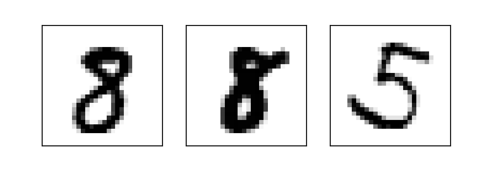

Create a Siamese Network with Triplet Loss in Keras
Task 1: Understanding the Approach
1 2 3 4 5 6 7 8 9 10 %matplotlib notebook import tensorflow as tfimport matplotlib.pyplot as pltimport numpy as npimport randomfrom pca_plotter import PCAPlotterprint ('TensorFlow version:' , tf.__version__)
TensorFlow version: 2.1.0Understanding the Approach
This appraoch is taken from the popular FaceNet paper.
We have a CNN model called EmbeddingModel:
CNN
We use three images for each training example: 1. person1_image1.jpg (Anchor Example, represented below in green) 2. person1_image2.jpg (Positive Example, in blue) 3. person2_image1.jpg (Negative Example, in red).
Embeddings
Siamese Network
All the three images of an example pass through the model, and we get the three Embeddings: One for the Anchor Example, one for the Positive Example, and one for the Negative Example.
Siamese Network
The three instances of the EmbeddingModel shown above are not different instances. It's the same, shared model instance - i.e. the parameters are shared, and are updated for all the three paths simultaneously.
1 2 3 4 5 6 7 8 9 10 11 12 13 14 15 16 17 18 19 20 21 22 23 24 25 26 27 28 29 30 31 32 33 34 35 36 37 38 39 import tensorflow as tfimport numpy as npfrom sklearn.decomposition import PCAclass PCAPlotter (tf.keras.callbacks.Callback ): def __init__ (self, plt, embedding_model, x_test, y_test ): super (PCAPlotter, self).__init__() self.embedding_model = embedding_model self.x_test = x_test self.y_test = y_test self.fig = plt.figure(figsize=(9 , 4 )) self.ax1 = plt.subplot(1 , 2 , 1 ) self.ax2 = plt.subplot(1 , 2 , 2 ) plt.ion() self.losses = [] def plot (self, epoch=None , plot_loss=False ): x_test_embeddings = self.embedding_model.predict(self.x_test) pca_out = PCA(n_components=2 ).fit_transform(x_test_embeddings) self.ax1.clear() self.ax1.scatter(pca_out[:, 0 ], pca_out[:, 1 ], c=self.y_test, cmap='seismic' ) if plot_loss: self.ax2.clear() self.ax2.plot(range (epoch), self.losses) self.ax2.set_xlabel('Epochs' ) self.ax2.set_ylabel('Loss' ) self.fig.canvas.draw() def on_train_begin (self, logs=None ): self.losses = [] self.fig.show() self.fig.canvas.draw() self.plot() def on_epoch_end (self, epoch, logs=None ): self.losses.append(logs.get('loss' )) self.plot(epoch+1 , plot_loss=True )
Task 2: Importing the Data
1 2 (x_train, y_train), (x_test, y_test) = tf.keras.datasets.mnist.load_data() print (x_train.shape)
(60000, 28, 28)1 2 3 x_train = np.reshape(x_train, (x_train.shape[0 ], 784 ))/255. x_test = np.reshape(x_test, (x_test.shape[0 ], 784 ))/255. print (x_train.shape)
(60000, 784)Task 3: Plotting Examples
1 2 3 4 5 6 7 8 def plot_triplets (examples ): plt.figure(figsize=(6 , 2 )) for i in range (3 ): plt.subplot(1 , 3 , 1 + i) plt.imshow(np.reshape(examples[i], (28 , 28 )), cmap='binary' ) plt.xticks([]) plt.yticks([]) plt.show()
1 plot_triplets([x_train[0 ], x_train[1 ], x_train[2 ]])
plot1
Task 4: A Batch of Triplets
1 2 3 4 5 6 7 8 9 10 11 12 13 14 15 16 17 18 19 20 21 22 def create_batch (batch_size=256 ): x_anchors = np.zeros((batch_size, 784 )) x_positives = np.zeros((batch_size, 784 )) x_negatives = np.zeros((batch_size, 784 )) for i in range (0 , batch_size): random_index = random.randint(0 , x_train.shape[0 ] - 1 ) x_anchor = x_train[random_index] y = y_train[random_index] indices_for_pos = np.squeeze(np.where(y_train == y)) indices_for_neg = np.squeeze(np.where(y_train != y)) x_positive = x_train[indices_for_pos[random.randint(0 , len (indices_for_pos) - 1 )]] x_negative = x_train[indices_for_neg[random.randint(0 , len (indices_for_neg) - 1 )]] x_anchors[i] = x_anchor x_positives[i] = x_positive x_negatives[i] = x_negative return [x_anchors, x_positives, x_negatives]
1 2 examples = create_batch(1 ) plot_triplets(examples)
plot2
Task 5: Embedding Model
1 2 3 4 5 6 7 8 emb_size = 64 embedding_model = tf.keras.models.Sequential([ tf.keras.layers.Dense(64 , activation='relu' , input_shape=(784 ,)), tf.keras.layers.Dense(emb_size, activation='sigmoid' ) ]) embedding_model.summary()
Model: "sequential"
_________________________________________________________________
Layer (type) Output Shape Param #
=================================================================
dense (Dense) (None, 64) 50240
_________________________________________________________________
dense_1 (Dense) (None, 64) 4160
=================================================================
Total params: 54,400
Trainable params: 54,400
Non-trainable params: 0
_________________________________________________________________1 2 3 4 example = np.expand_dims(x_train[0 ], axis=0 ) example_emb = embedding_model.predict(example)[0 ] print (example_emb)
[0.42349347 0.43482512 0.5846526 0.5047948 0.4264534 0.48105526
0.37568194 0.5898737 0.61923265 0.38126072 0.51810735 0.6918024
0.42151055 0.31393877 0.550636 0.4718757 0.72107047 0.5304595
0.60560906 0.54731256 0.47088197 0.57321566 0.38795182 0.3528969
0.5260858 0.5058847 0.60069776 0.5351782 0.45879558 0.49318898
0.52481294 0.48127335 0.41399142 0.53644794 0.596148 0.35952103
0.4660656 0.51290053 0.34802675 0.28829136 0.49941048 0.41946915
0.5193161 0.59598917 0.42652634 0.7554737 0.51301926 0.3393702
0.61319596 0.3912717 0.58737236 0.5881264 0.5892425 0.62002826
0.47996673 0.44889334 0.47385594 0.4038328 0.60131633 0.57539546
0.47411144 0.5514124 0.6192302 0.60763264]Task 6: Siamese Network
1 2 3 4 5 6 7 8 9 10 11 12 input_anchor = tf.keras.layers.Input(shape=(784 ,)) input_positive = tf.keras.layers.Input(shape=(784 ,)) input_negative = tf.keras.layers.Input(shape=(784 ,)) embedding_anchor = embedding_model(input_anchor) embedding_positive = embedding_model(input_positive) embedding_negative = embedding_model(input_negative) output = tf.keras.layers.concatenate([embedding_anchor, embedding_positive, embedding_negative], axis=1 ) net = tf.keras.models.Model([input_anchor, input_positive, input_negative], output) net.summary()
Model: "model"
__________________________________________________________________________________________________
Layer (type) Output Shape Param # Connected to
==================================================================================================
input_1 (InputLayer) [(None, 784)] 0
__________________________________________________________________________________________________
input_2 (InputLayer) [(None, 784)] 0
__________________________________________________________________________________________________
input_3 (InputLayer) [(None, 784)] 0
__________________________________________________________________________________________________
sequential (Sequential) (None, 64) 54400 input_1[0][0]
input_2[0][0]
input_3[0][0]
__________________________________________________________________________________________________
concatenate (Concatenate) (None, 192) 0 sequential[1][0]
sequential[2][0]
sequential[3][0]
==================================================================================================
Total params: 54,400
Trainable params: 54,400
Non-trainable params: 0
__________________________________________________________________________________________________Task 7: Triplet Loss
A loss function that tries to pull the Embeddings of Anchor and Positive Examples closer, and tries to push the Embeddings of Anchor and Negative Examples away from each other.
Root mean square difference between Anchor and Positive examples in a batch of N images is: $ \[\begin{equation}
d_p = \sqrt{\frac{\sum_{i=0}^{N-1}(f(a_i) - f(p_i))^2}{N}}
\end{equation}\] $
Root mean square difference between Anchor and Negative examples in a batch of N images is: $ \[\begin{equation}
d_n = \sqrt{\frac{\sum_{i=0}^{N-1}(f(a_i) - f(n_i))^2}{N}}
\end{equation}\] $
For each example, we want: $ \[\begin{equation}
d_p \leq d_n
\end{equation}\] $
Therefore, $ \[\begin{equation}
d_p - d_n \leq 0
\end{equation}\] $
This condition is quite easily satisfied during the training.
We will make it non-trivial by adding a margin (alpha): $ \[\begin{equation}
d_p - d_n + \alpha \leq 0
\end{equation}\] $
Given the condition above, the Triplet Loss L is defined as: $ \[\begin{equation}
L = max(d_p - d_n + \alpha, 0)
\end{equation}\] $
1 2 3 4 5 6 7 alpha = 0.2 def triplet_loss (y_true, y_pred ): anchor, positive, negative = y_pred[:,:emb_size], y_pred[:,emb_size:2 *emb_size], y_pred[:,2 *emb_size:] positive_dist = tf.reduce_mean(tf.square(anchor - positive), axis=1 ) negative_dist = tf.reduce_mean(tf.square(anchor - negative), axis=1 ) return tf.maximum(positive_dist - negative_dist + alpha, 0. )
Task 8: Data Generator
1 2 3 4 5 def data_generator (batch_size=256 ): while True : x = create_batch(batch_size) y = np.zeros((batch_size, 3 *emb_size)) yield x, y
Task 9: Model Training
1 2 3 4 5 6 7 8 9 10 11 12 13 14 15 16 batch_size = 2048 epochs = 10 steps_per_epoch = int (x_train.shape[0 ]/batch_size) net.compile (loss=triplet_loss, optimizer='adam' ) _ = net.fit( data_generator(batch_size), steps_per_epoch=steps_per_epoch, epochs=epochs, verbose=False , callbacks=[ PCAPlotter( plt, embedding_model, x_test[:1000 ], y_test[:1000 ] )] )
plot3
WARNING:tensorflow:sample_weight modes were coerced from
...
to
['...']